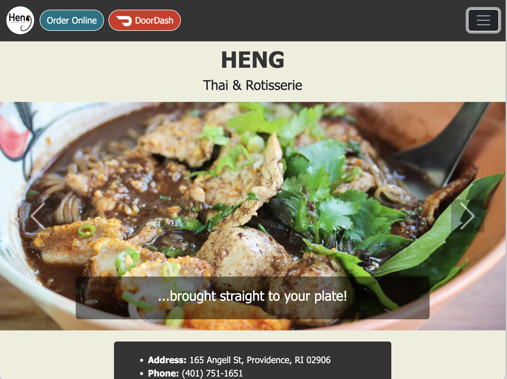

Responsive Redesign
Tip: click and hold down on any image to enlarge it!
Overview
Have you ever ordered food online and found the website difficult to navigate? That was the experience I had when I tried ordered from Heng Thai and Rotisserie (or Heng for short).
This project is a responsive redesign of Heng's website, as part of the course CSCI 1300: Interaction Design at Brown University. I chose to analyze and redesign this website because Heng is my favorite restaurant in Providence, RI, and I believe their website can be improved.
Below is a screenshot of the Heng's home page
(hengpvd.com/home).
Note: the website has since changed design
Problems with Original Design
Going on Heng's home page, I always have trouble figuring out how to use the website. In order to improve the website, I first consolidated all the usability and accessability issues I found. The major issues found were:
- Low contrast in web components, like text and buttons
- Text too small to read on mobile devices
- Unclear where to click to order food
- Hard to find "Order" and "DoorDash" buttons
- Function of circles on right side unclear
Visual Redesign
In order to improve the usability of Heng's website, I decided to redesign the home page. I made a visual design style guide and mockups for a desktop, tablet, and mobile device to illustrate changes I made to the home page.
Updates
Here is a brief summary of the updates I made to the home page:
- Layout reorganized to make website more intuitive and user-friendly
- Increased font size in navigation bar and body text
- Increased contrast in buttons and text body
- Buttons moved to navigation bar for efficiency
- Navigation bar collapses on mobile devices and tablets
- Carousel added to make website more visually appealing and highlight specials
- Buttons and tabs change on hover for better visibility
- Active tab underlined and bold for better visibility
Desktop Mockup

Tablet + Mobile Mockups

Visual Design Style Guide
Conclusion
This project was a great opportunity to practice how to make a website accessible. I learned about the many factors that go into responsive redesign, such as ensuring that the website works well on different devices and is user-friendly for all users, including those with disabilities. Analyzing Heng's website taught me how to identify and address usability and accessibility issues. This is especially important for me as a data scientist, as I want to create interfaces that are accessible to all users in order to provide a positive user experience.
I also developed skills in creating visual design style guides and mockups to communicate design ideas effectively. This will enable me to clearly convey design concepts to developers and other stakeholders, ensuring that the final product aligns with the intended vision.